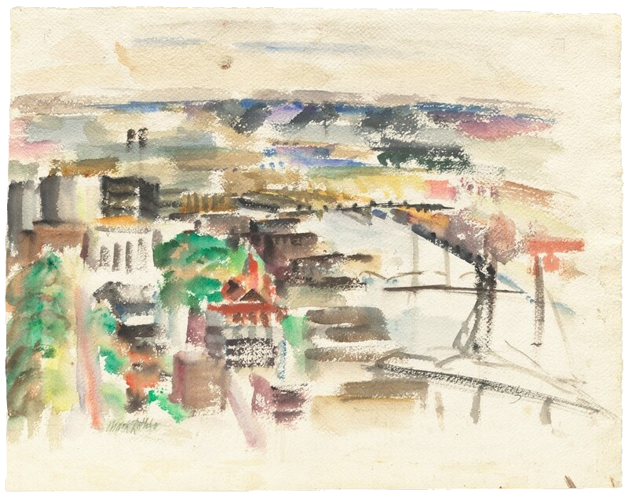
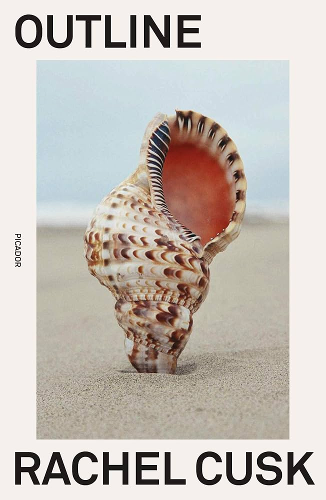
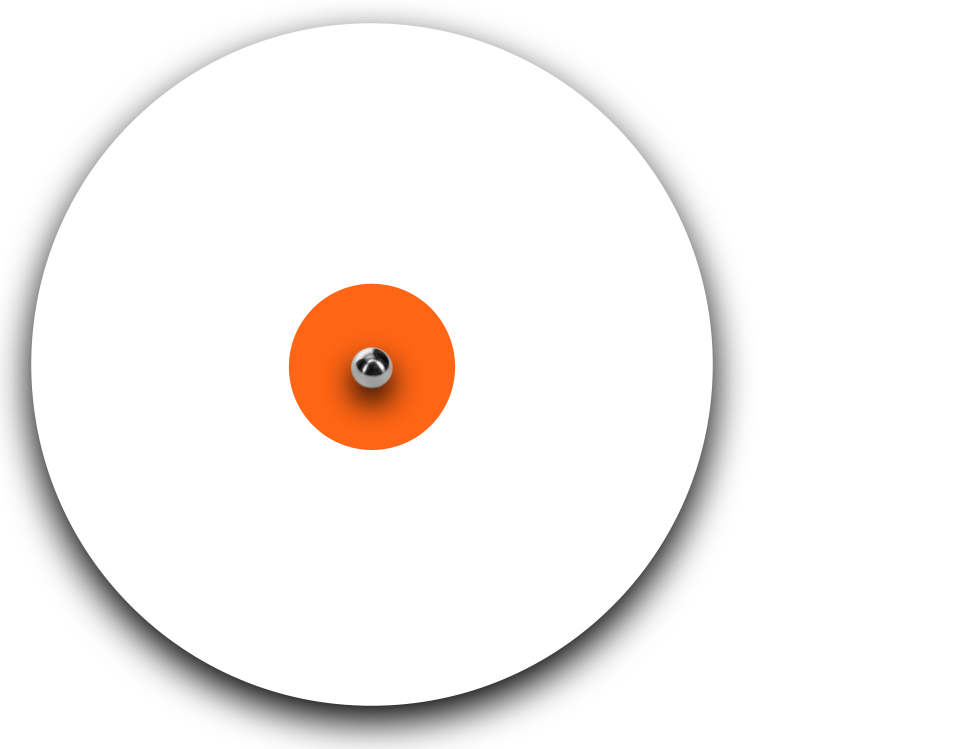
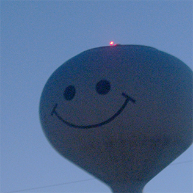
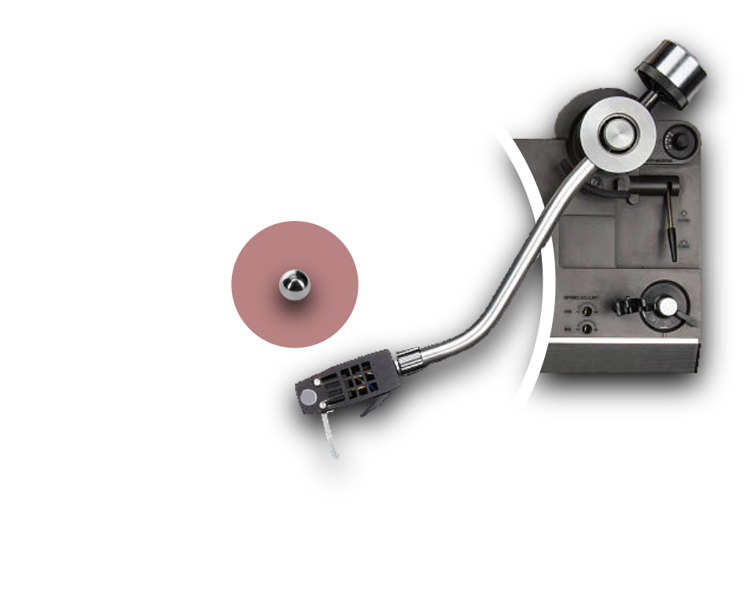

siruno.xyz

Bio
I like solving problems. I’ve had significant experience in statistics, data analysis, and artificial intelligence, and I'm currently helping design the data analysis pipeline for IPUMS-International, the largest collection of census data in the world. I want to translate this quantitative approach to social research into a career in public interest law, defending constitutional rights and civil liberties.
Rotation
currently reading

currently hearing


